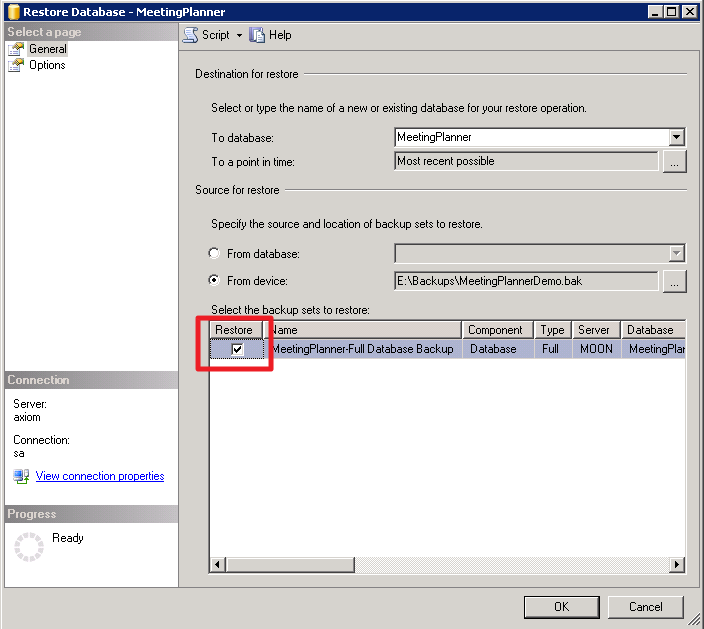

IMPORTANT: The application and database servers can be, but do not have to be, the same.
| Prerequisite | Details |
|---|---|
| SQL Server | 2008 R2 and newer Management Studio Mixed Authentication Mode Enabled |
| Requirements | SQL instance SQL login Restore Database |

Provide the MeetingPlanner Installer the following:
Important! The installation data is required to install MeetingPlanner.
Page tags: article:topicRoom Signs with ExchangePre-Installation SQL Serverpersona:UserFacilitiesMgr